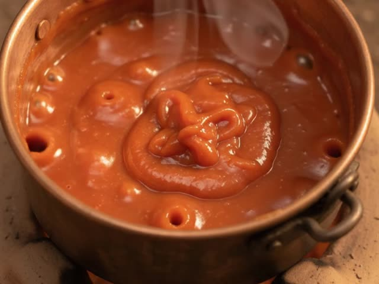
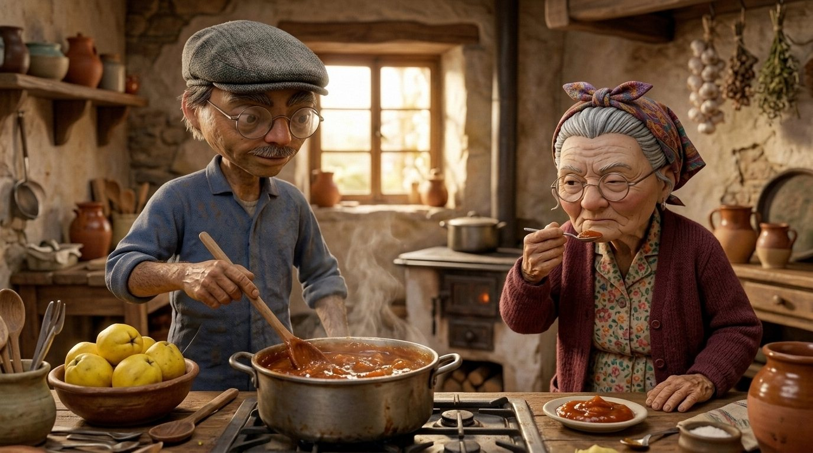

Olla de fondo grueso
Reparte el calor y no se agarra. En una olla fina, el membrillo se quema antes de cuajar.
Verlo en Amazon

El membrillo no se hace con prisa. Se hace con paciencia y con una cuchara larga, que salpica más que la Puri cuando cuenta algo.
La receta completa, con cantidades y paso a paso, está en el recetario: Carne de membrillo (nº 51).

Reparte el calor y no se agarra. En una olla fina, el membrillo se quema antes de cuajar.
Verlo en Amazon
El membrillo salpica y quema como el demonio. Con mango largo, la mano lejos.
Verlo en Amazon

Pa que cuaje con su forma de bloque, como el de la tienda pero mejor.
Verlo en AmazonAlgunos enlaces son de afiliado: si compras a través de ellos, a ti te cuesta lo mismo y yo me llevo una pequeña comisión. En calidad de Afiliado de Amazon, obtengo ingresos por las compras adscritas que cumplen los requisitos aplicables.

Cien recetas de pueblo, con sus trucos, sus refranes y alguna que otra trastada de Lucera.